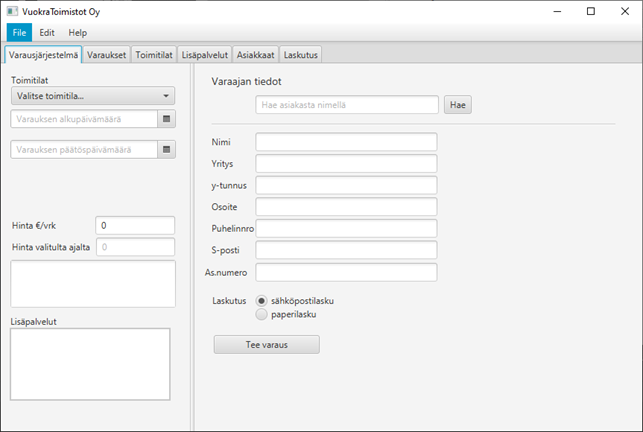

Tämä projekti kuului osaksi Karelia-ammattikorkeakoulun ensimmäisen vuoden opintojani. Tarkoituksena oli suunnitella kuvitteelliselle yritykselle toimipisteiden, palveluiden, asiakkaiden, toimistotilavarausten, laskujen, ja lisäpalveluiden hallintajärjestelmä.
Projektissa toimimme viiden henkilön tiimissä ja jokaisella tiimiläisellä oli vastuulla oma osio ohjelmasta. Ohjelmointikielenä toimi Java.